Доска умений¶
На доске умений стоят камни умений: окно снаряжения, вкладка «Умения». Камни действуют через ячейки, с которыми граничат стороной.
Камень из рюкзака ставится на открытую ячейку: взять его и нажать на ячейку или ПКМ по нему в рюкзаке. Камни работают через ячейки, с которыми у них общая сторона: активатор запускает соседние эффекты, поддержки меняют соседей, ауры после включения работают сами. Перетаскивание между ячейками меняет камни местами; ПКМ по камню возвращает его в рюкзак.
Ячейки¶
На доске 19 шестиугольных ячеек в два кольца вокруг центра; 4 открыты с начала (закрашены выше). Каждый Резец пробуждения открывает ещё одну закрытую ячейку.
Открывается Резцом пробуждения: ПКМ по резцу в рюкзаке, затем ЛКМ по этой ячейке. Открытая ячейка не добавляет ёмкости.
Как соединяются камни¶
- Активатор: Камень, который реагирует на событие — попадание, критическое попадание, блок, парирование, убийство — и разом запускает все совместимые соседние эффекты. Его эффекты удорожают по выносливости атаку или блок, которые за них платят, — произошло событие или нет.
- Эффект: Камень, который что-то делает, когда его запускает соседний активатор: молния, волна, исцеление, проклятие. Если рядом два активатора, работает от одного из них; какого — переключается в окне борда.
- Проклятие: Ослабление на враге: ниже сопротивление, слабее удары, медленнее действия или больше получаемого накопления. Один игрок держит на каждом враге одно проклятие; повторное проклятие обновляется, новое заменяет самое старое.
- Поддержка: Камень, который меняет соседние эффекты и ауры — вместе со своим недостатком. Активаторы и другие поддержки он не меняет и не достаёт дальше соседей.
- Аура: Камень, который работает сам, пока включён, и резервирует эйтр. Соседние поддержки его меняют; Круг даров дарует формы ауры своих поддержек, Круг злословия держит свои проклятия на врагах внутри.
Эффект берёт один соседний активатор, который может его запустить: выбранный в окне доски, иначе первый по порядку доски. Проклятие вместо активатора может взять соседний Круг злословия. Активатор работает, только если запускает хотя бы один эффект; срабатывая, он запускает их все. Поддержка меняет каждый соседний эффект или ауру, теги которых она поддерживает (перечислены на её странице); Круг даров берёт все соседние поддержки. Аурам активатор не нужен: они работают, пока включены.
Какой активатор запускает какой эффект¶
Активатор даёт эффектам то, что есть у его события: живую цель, выстрел, входящий удар, труп. Эффект, которому нужно большее, остаётся не подключён.
| Эффект | При попадании | При критическом попадании | При блокировании | При парировании | После убийства горящего | После убийства кровоточащего |
|---|---|---|---|---|---|---|
| Искра Эйктюра | ✓ | ✓ | ✓ | ✓ | ✓ | ✓ |
| Ночной выводок | ✓ | ✓ | ✓ | ✓ | ✓ | ✓ |
| Морозная волна | ✓ | ✓ | ✓ | ✓ | ✓ | ✓ |
| Кровь победителя | ✓ | ✓ | ✓ | ✓ | ✓ | ✓ |
| Осколок возмездия | — | — | ✓ | ✓ | — | — |
| Эхо тетивы | ✓ | ✓ | — | — | — | — |
| Ледяные осколки | ✓ | ✓ | ✓ | ✓ | ✓ | ✓ |
| Огненный всплеск | ✓ | ✓ | ✓ | ✓ | ✓ | ✓ |
| Пламя павшего | — | — | — | — | ✓ | — |
| Кровавое наследство | — | — | — | — | — | ✓ |
| Разрыв плоти | ✓ | ✓ | ✓ | ✓ | — | — |
| Разомкнутые печати | ✓ | ✓ | ✓ | ✓ | — | — |
| Гнилая кровь | ✓ | ✓ | ✓ | ✓ | — | — |
| Обнажённая душа | ✓ | ✓ | ✓ | ✓ | — | — |
| Надломленная воля | ✓ | ✓ | ✓ | ✓ | — | — |
| Путы Норн | ✓ | ✓ | ✓ | ✓ | — | — |
| Обнажённая сталь | ✓ | ✓ | ✓ | ✓ | — | — |
| Дрожь костей | ✓ | ✓ | ✓ | ✓ | — | — |
| Излом доспеха | ✓ | ✓ | ✓ | ✓ | — | — |
✓ — активатор запускает эффект; — — не может (наведите, чтобы увидеть причину из игры). При блокировании срабатывает и на парирование.
Состояния¶
Подсказка камня на доске говорит, что он делает:
- Работает: подключён и работает.
- Не подключён: рядом нет ничего, с чем он работает.
- Несовместим: рядом только активаторы, которые не могут его запустить.
- Выключен: выключенная аура; левый клик включает её.
- Ждёт эйтра: аура, которой не хватает оставшегося максимума эйтра.
- Ёмкость превышена: доска занимает больше ёмкости, чем у неё есть: ничего на ней не работает.
Ёмкость¶
Каждый камень на доске занимает ёмкость, подключён он или нет. У нового персонажа 8; каждые 10 заработанных очков пассивов дают ещё одну, до 20 при 120 очках. Открытие ячейки ёмкости не добавляет.
| Камень | Ёмкость |
|---|---|
| Активатор | 2 |
| Эффект | 3 |
| Проклятие | 3 |
| Поддержка | 1 за каждый поддержанный камень |
| Аура | 3 |
| Аура: 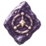 Круг даров,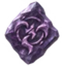 Круг злословия |
4 |
Ёмкость превышена: борд не работает, пока часть камней не снята или ёмкость не выросла. Поставить камень, которому не хватает ёмкости доски, нельзя.
Расход выносливости¶
Активаторы попадания, критического попадания и убийства повышают расход выносливости на каждую атаку, попала она или нет; активаторы блока и парирования — на каждый блок, один раз за блок. Платится, сработал активатор или нет.
Множитель цены дают поддержки эффекта: Долгая печать делает его дороже, Бережная грань — дешевле; удлинение длительности от Долгая печать ещё добавляет половину себя на эффектах с тегом «Длительность». Выносливость атаки или блока умножается на 1 + сумму надбавок его активаторов.
Пример: При попадании рядом с Искра Эйктюра с двумя поддержками добавляет 6% + 2 × 3% = 12% к выносливости каждой атаки.
| Название | Цена | |
|---|---|---|
| При попадании | За каждый запускаемый эффект: +6% расхода выносливости на атаку — на каждой атаке, с попаданием или без | |
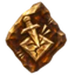 |
При критическом попадании | За каждый запускаемый эффект: +6% расхода выносливости на атаку — на каждой атаке, с попаданием или без |
| При блокировании | За каждый запускаемый эффект: +8% расхода выносливости на блок — на каждом блоке | |
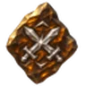 |
При парировании | За каждый запускаемый эффект: +8% расхода выносливости на блок — на каждом блоке |
| После убийства горящего | За каждый запускаемый эффект: +4% расхода выносливости на атаку — на каждой атаке, с попаданием или без | |
| После убийства кровоточащего | За каждый запускаемый эффект: +4% расхода выносливости на атаку — на каждой атаке, с попаданием или без |
Резерв эйтра¶
Включённая аура, пока работает, удерживает за собой часть максимального эйтра; каждая поддержка ауры резервирует больше. Если максимум эйтра падает, последние по порядку борда ауры ждут, пока его снова не хватит.
Доля берётся от всего максимального эйтр. Ауры резервируют по порядку доски из того, что остаётся после эйтра, удерживаемого вашими призванными существами и колоколами (удерживаемый эйтр): та, что не помещается, ждёт (состояние «Ждёт эйтра»), а следующую всё равно пробуют; при максимальном эйтре 1 и меньше не помещается ни одна. Выключенная аура или доска сверх ёмкости ничего не резервирует. Включить ауру или поставить камень, из-за которого аура будет ждать, нельзя. Эффективность резервирования учитывается до 75%.
Круг даров вместо этого добавляет свою величину за поддержку; Круг злословия ещё добавляет 10 за каждое удерживаемое проклятие и 3–2.4 за каждое Тяжёлое слово на удерживаемом проклятии.
Пример: Тёплый очаг (25%) с одной поддержкой при максимальном эйтре 200 резервирует 25% × 200 + 5 = 55 эйтра.
| Название | Цена | За каждый соседний | |
|---|---|---|---|
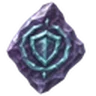 |
Покров рун | 25% | +5 за поддержку |
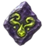 |
Чумное дыхание | 25% | +5 за поддержку |
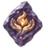 |
Тёплый очаг | 25% | +5 за поддержку |
| Круг стойкости | 50% | +5 за поддержку | |
| Круг даров | 50% | +6 за поддержку | |
| Грозовой венец | 15% | +5 за поддержку | |
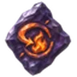 |
Ответный жар | 15% | +5 за поддержку |
| Дождь под ногами | 15% | +5 за поддержку | |
| Круг злословия | 50% | +5 за поддержку +10 за удерживаемое проклятие |
Ауры в работе¶
Сила умножает собственные числа ауры (рунный щит, регенерацию, стойкость, урон ядом) и то, что даёт Круг даров. Внутренний круг добавляет к эффекту её поддержек; Широкое эхо отнимает от эффекта ауры, не наносящей урона.
Аура с поддержкой Внутренний круг действует только на своего носителя: союзники рядом ничего не получают.
Круг даров даёт каждую поддержку рядом в форме ауры (формы аур): её усиления × сила круга × (1 + 10% × (ранг поддержки − 1)); избыточные шансы зависят только от ранга поддержки, а недостатки смягчаются с этим рангом.
Чумное дыхание и Ответный жар наносят урон со временем, а не удары. Каждые 0.5 с Чумное дыхание наносит каждому врагу в радиусе 0.5 с своего урона ядом в секунду. Полученный урон огнём запускает Ответный жар: пока длится эффект, каждые 0.25 с наносится 0.25 с доли камня от огня, полученного за последнюю секунду. Эти тики нельзя заблокировать или избежать, они не оглушают и не отталкивают; учитываются увеличение и больший урон персонажа, вместе с его уроном по области, уроном со временем и уроном аур (и заклинаний — для камня с тегом «Заклинание»).
Камни и ваши характеристики¶
Эффект камня учитывает собственные характеристики персонажа по тому, чем он является: увеличение урона и урон его вида (по области, снарядами, заклинаниями — для камня-заклинания), область действия, длительность эффектов, дополнительные снаряды, пробивание и цепи, скорость снарядов и отбрасывание. Числа его поддержек (избыточный шанс, увеличение области, большая длительность) складываются в те же суммы, что и собственные характеристики персонажа, а его удары затем проходят через правила ударов персонажа, как любые другие.
Проклятия¶
Ослабление на враге: ниже сопротивление, слабее удары, медленнее действия или больше получаемого накопления. Один игрок держит на каждом враге одно проклятие; повторное проклятие обновляется, новое заменяет самое старое.
Один игрок держит на каждом враге 1 проклятие; Двойное злословие повышает это число (не больше 8). Проклятия других игроков в ваш предел не входят.
Проклятие, которое вы уже держите на враге, обновляется: длится до более позднего конца и сохраняет более сильное значение. Новое сверх предела заменяет ваше самое старое; проклятие от Круг злословия в таком случае просто не накладывается.
Эффект проклятий усиливают, например, пассивы Тяжесть слов.
Длительность проклятий увеличивают, например, пассивы Тяжесть слов.
| Название | Эффект | |
|---|---|---|
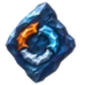 |
Разомкнутые печати | Проклинает цель: -(15–21)% к сопротивлению огню, холоду и молнии на 6 с. |
| Гнилая кровь | Проклинает цель: -(20–28)% к сопротивлению яду на 6 с. | |
| Обнажённая душа | Проклинает цель: -(20–28)% к сопротивлению духу на 6 с. | |
| Надломленная воля | Проклинает цель: на 6 с она наносит на 20–28% меньше урона. Боссы: 50% эффекта. | |
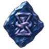 |
Путы Норн | Проклинает цель: на 6 с скорость передвижения и атаки на 20–28% меньше. Боссы: 50% эффекта. |
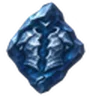 |
Обнажённая сталь | Проклинает цель: на 6 с её броня против ударов на 25–35% меньше. |
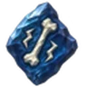 |
Дрожь костей | Проклинает цель: на 6 с она получает на 30–42% больше накопления оглушения. Само по себе не оглушает. |
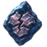 |
Излом доспеха | Проклинает цель: на 6 с она получает на 30–42% больше накопления разрушения брони. |
Ранги и огранка¶
У камня ранг от 1 до 5. Каждый ранг выше первого что-то меняет:
- То, что делает камень (доли урона, лечение, значения проклятий, бонусы поддержек, весь эффект ауры), растёт на 10% от значения на ранге 1.
- Недостаток (меньший урон, более долгий отдых или большая цена поддержки; то, что аура делает со своим носителем) смягчается на 5% от значения на ранге 1.
- Поддержка, добавляющая снаряды, цепи или пробивания (Разветвление, Переход, Сквозь строй), даёт избыточный шанс: +100% за каждое добавление на ранге 1 и +35% за каждый ранг выше.
- Шанс активатора ниже 100% растёт на 10% от значения на ранге 1, но не выше 100%.
- Активатор, срабатывающий всегда (При блокировании, При парировании), вместо этого отдыхает на 10% от перезарядки на ранге 1 меньше.
- Области, дальности, количества, пределы, длительности, перезарядки эффектов, цены, ёмкость и резерв эйтра не меняются, кроме случаев, когда камень делает одно из них своим преимуществом (Тяжёлый импульс, Дождь под ногами, Круг злословия).
Ранг неогранённого камня зависит от уровня существа или сундука, из которого он выпал: 1 + ⌊уровень ÷ 15⌋, не больше 5.
| Ранг | Уровень существа | С биома |
|---|---|---|
| 1 | 0–14 | Луга |
| 2 | 15–29 | Луга |
| 3 | 30–44 | Черный лес |
| 4 | 45–59 | Болото |
| 5 | 60+ | Болото |
Правый клик по неогранённому камню открывает окно огранки: Неогранённый камень активатора гранится в любой активатор, Неогранённый камень эффекта — в любой эффект, проклятие или ауру, Неогранённый камень поддержки — в любую поддержку. Камень получает ранг неогранённого. Вместо огранки тот же неогранённый камень может поднять один камень своего вида — в сумке или на доске — на один ранг, не выше своего ранга.
Камни боссов¶
Их гранят только после того, как их босс побеждён в мире (или этим персонажем):
| Босс | Камни умений |
|---|---|
| Прародитель | 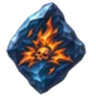 Пламя павшего |
| Королева | 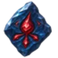 Кровавое наследство, |
| Эйктюр | 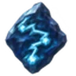 Искра Эйктюра, |
| Матерь | 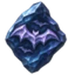 Ночной выводок |
| Яглут | 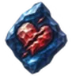 Разрыв плоти, Ответный жар |
Печати¶
Персонаж, у которого есть одна из этих печатей боссов — в сумке или вставленная в предмет, — однажды получает эти предметы за каждую печать, камни ранга 3. При полной сумке они ждут места.
Правила¶
- Снять камни с борда можно только вне боя.
- Один камень-предмет ставится на доску один раз; два камня одного вида могут стоять оба.
- Правый клик по камню в сумке ставит его в первую свободную открытую ячейку.
Данные из Path of Valheiman 6.0.12, извлечены 2026-11-13.